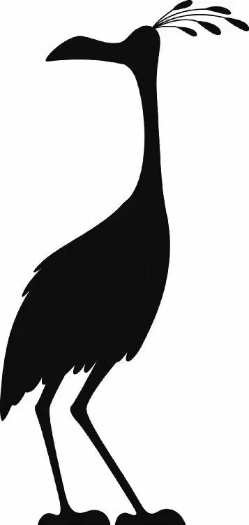

“Wow!” Carl said as he poked around Muntz’s trophyroom. It was packed with rare treasures. “Would you look at that? Ah, Ellie. I can’t believe I’m actually here!”
He chuckled as Muntz led him past weapons, statues, pottery, jewelry, and other objects from around the world.
“I see you like my collection,” Muntz said. “This comforts me, as the years pass. A reminder of who I am. One can lose one’s way on these mountains, and over time, one can forget.”
Carl was barely listening. He was too entranced with the artifacts around him. “Oh, will you look at that!” he cried. “The Giant Somalian Leopard Tortoise!”
Just then, Alpha entered the room. “Master,” he said in a squeaky voice, “dinner is ready.”
“Oh, dear,” Muntz said. He leaned over to fix the dog’s broken translator.
“Thank you, Master,” Alpha said in a deep, frightening voice.
“I liked his other voice,” Russell said. He cast a nervous glance at Alpha.
Muntz laughed. “Well, dinner is served!”
Muntz fed Carl and Russell hot dogs. “My Ellie would have loved all this,” Carl told Muntz. “You know, it’s because of you she had this dream to come down here and live by Paradise Falls.”
“It’s a pleasure to have guests,” Muntz said. “More often I get thieves, come to steal what’s rightfully mine.” Muntz picked up a lantern. He held it high so that Carl could see the hundreds of drawings, photos, and feathers that lined the room. They were all his research on one creature—the Monster of Paradise Falls.
“Beautiful, isn’t it?” Muntz said, gazing upon his obsession.
Carl looked at the pictures. They seemed very familiar. In fact, it looked as if Muntz had spent decades searching for … Kevin.
“I’ve spent a lifetime tracking it,” Muntz went on. “Trying to smoke it out of that deathly labyrinth where it lives …”
“Hey,” Russell said suddenly. “That looks like Kevin!”
Muntz’s eyes narrowed. “Kevin?”
“My new giant bird pet,” Russell explained.
“But it ran away!” Carl added quickly. “It’s gone now.”
Muntz gave Carl a long, hard look. Then he walked over to a table that was covered in old flight helmets. “Carl. Those people who come here, they all have a story. A ‘surveyor’ making a map.” He knocked a helmet to the ground with his cane. “A ‘botanist’ cataloging plants.” Another helmet tumbled to the floor. “An old man taking his house to Paradise Falls.” Muntz tossed a last helmet to the ground. It rolled to a stop at Carl’s feet.
Carl didn’t like where this conversation was headed. He glanced out the window. Kevin was sitting on the roof of his house! The bird had followed them into the cave. “Well, it’s been a wonderful evening, but we’d better get going.” Carl grabbed Russell’s arm and dragged him out of the room. Muntz followed, his dogs at his heels.
Just then, a wail echoed through the cave.
“Kevin?” Russell cried.
Muntz gasped and looked out the window. “It’s here.”
He turned toward Carl and Russell—but they had slipped out the door! “Get them!” Muntz shouted to the dogs.
Carl and Russell darted down the gangplank. The dogs bolted after them.
“Hurry!” Carl urged as he and Russell worked to untie the house.
“I am hurrying,” Russell insisted.
Just then, the house came loose. They slipped on their harnesses and ran, pulling the house as fast as they could.
A moment later, the dogs poured down the gangplank.
“They’re coming!” Russell cried.
“Master, over here!” Dug called out. He showed them a side cave.
Carl and Russell darted toward it, but they weren’t fast enough. The dogs were closing in on them.
Kevin leaped from the roof of the house. She picked up Russell and put him on her back. Then she scooped up Carl. She took off, dragging the house.
The bird raced through the cave, dogs hot on her heels. Kevin wove around the tall rock formations. Carl clung to her neck for dear life. Above him, balloons popped as they dragged against the rough ceiling.
Carl’s eyes grew wide with dismay.
A giant rock loomed in front of them. The house slammed into it, and Russell fell to the ground. He was still tied into the hose harness. He was being pulled behind Kevin, bumping over the ground.
The dogs were right behind Russell. Alpha snapped at his heels!
Carl stabbed his cane at the dog. “Get back!” Alpha was closing in…
Suddenly, there was a rumble. Then a roar… and in a moment, a wave of rocks swept between the dogs and Russell. The dogs had to stop short.
Russell and Carl looked back as the bird kept running.
A golden figure wearing a large funnel stood at the top of the canyon wall. It was Dug!
“Go on, Master! I will stop the dogs!” Dug slid down the wall. He leaped into a gap between two boulders and turned to face Alpha. “Stop, you dogs!” he commanded.
Alpha lunged. He threw Dug against the wall, hard. The Cone of Shame popped off. Dug was okay, but the dogs raced through the gap.
Kevin blasted forward, then turned suddenly to the right. Russell swung out … over the edge of a cliff. The bird jumped over tall, narrow rocks. They were shaped like five-thousand-foot-tall candles. Russell bounced between the candle-like rocks. “Help!”
“Give me your hand!” Carl commanded. He pulled Russell back onto the bird just as they dropped to a landing.
Kevin came to a sudden stop. They were at the edge of a cliff. At the bottom was a river. “Oh, no!” Russell cried. The dogs were coming behind them. They were trapped.
Overhead, the house kept moving. Carl realized it was about to drag them forward …
“Hang on to Kevin!” he shouted just as the house yanked them over the edge.
The dogs leaped after them. Gamma and Beta fell into the river, but Alpha’s teeth sank into Kevin’s leg. Kevin cried out, but she managed to shake Alpha off. The dog landed in the water with a splash.
Carl let out a grunt as they landed on the other side of the canyon. He could hear distant barking as the river carried the dogs downstream.
Carl struggled to his feet, breathing hard. He checked his limbs. Nothing broken. He checked his house. No serious damage. He heaved a sigh of relief. He glanced over at Russell.
The boy was rushing toward Kevin. The bird couldn’t stand up. She squawked pitifully and fell to the ground. Alpha’s bite had injured her leg badly.
Russell bandaged her as well as he could with his first-aid kit. The bird tried to stand up, but she couldn’t.
“No, no, no, no, no!” Russell urged. “Kevin! Stay down!” He turned to Carl. “She’s hurt real bad. Can’t we help her get home?”
Carl peered at the falls. If he waited much longer, the balloons would deflate. Then he’d never make it. But he’d promised Ellie—even crossed his heart.
But he’d made a promise to Russell, too.
Carl glanced at the rock maze.
“All right,” Carl said to Russell reluctantly. “But we’ve got to hurry.”
